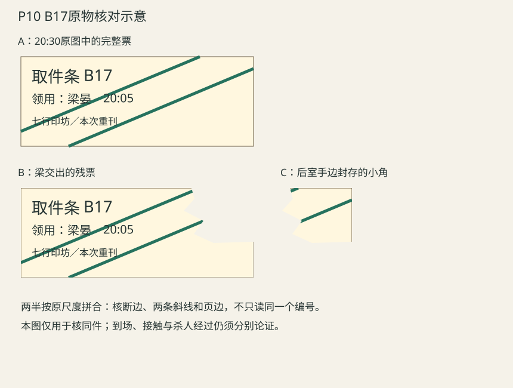
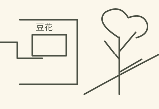

P07 同一张原校样

这是真实同一纸张的观察描摹，非拼接页、假签名或复印替换。左边角完整字、右正式题位断字大小一致，来自同一枚字的两次印刷。
放大交叉点的可见关系：左边黑墨被红线压住；右边黑墨压住红线。图中红线与红批是同次落笔，笔路连贯。此观察可靠，不需要玩家判断现实油墨化学或干燥速度。
可领取甲、乙、丙三片，按能形成这个交叉关系的顺序摆放。纸层只证明相对先后；给活人会面定范围，还须结合P04、P06。
主持人按目录分发。包含调查资料，玩家开场前勿通读。Q03先交陆芹与许柚；公开拼册可用空白替页。R01按探索触发给韩照。每卡独立分页，不含主持人核验答案。
在铺名单：孟青、沈舟、陆芹、韩照、林祈、许柚；旧主编顾砚生；发行协调梁晏、发行商冯煜、顾砚生儿子顾霁；医生罗师傅与一名快递员。作者江望在外城。没有未登记访客。
后室只有一扇通向短走廊的门，走廊经唯一后区入口连接前厅。侧间字盒柜与装订台都在前区，不必经过后区入口。没有暗门、藏人或可替机器操纵的攻击装置。前厅压机只用于印刷，停止时没有自主动作。
时钟已经核对一致。所有原始记录上的钟点都是真实钟点，不设钟差。
20:32—20:45，六名玩家和梁晏、冯煜、顾霁九名发布参与者均在前厅两机位原片中，脸与位置持续可辨认，没有离席。罗师傅也在前厅镜头内照看韩照。
画面实时，无剪辑、延迟或替身。压机在镜头范围内，孟青20:33的操作属于这段原片。快递员在装卸区，另有前门与装卸区工作记录相互核对，没有进入后室。
这份记录只证明20:32之后，不证明20:30之前或开播前两分钟。
20:28，孟青用一枚大标题铅字“春”，在试纸左边角印下题位样。许柚见过移交沈舟的纸，另留一张完整字试纸。
20:32，孟搬字时右下笔划崩缺，许与直播镜头都看见断角。他保留字与断角。此后同枚字只能留下缺右下笔的印面，不会自行恢复。
大字只有这一枚，同一大小、同一边缘细节。普通小号字与复印件可分辨，不能当作同一原印。纸能多次过机，但后一次不会擦掉已有黑笔画。两次“春”印在不同位置。
沈舟可立即确认：孟最后一次把边角题位试纸交来后，他拿它进后室。顾砚生当着他用红笔写了“署名江望移前；私人末页不公开”，同时画了一条跨过边角题字和右侧预留题位的长线。
顾能与他正常交谈、取笔、交回原纸。不是沈隔门听到声音，不是替别人转述。沈没有看钟，不能给这个会面报精确分钟。
之后沈回前厅签收原稿袋。顾落笔发生在签收之前。签收的同时，顾从走廊来到前厅入口边，亲手交来补充授权页，回答沈关于末页的具体问题，再返回后区；P17记录了这段正常交接。此时的顾已不是20:22推搡现场那个倒地姿势。
孟青说：“20:33我在右侧正式题位补印，左边角的完整字不用再打。我取过来的这张纸已经有红批。补印时字已经缺角，直播里能看见我操作。”
他没有看见顾写红字，不知道那次会面的钟点。可以当场配合检查、重演纸张过机顺序，专业操作不用玩家做。
快递原单R04：20:30，江望寄来的原稿袋交沈舟本人，扫码记录、签收与快递员见闻相符。没有代签或补填钟点。
沈自己记得：见顾亲批在前，回前厅签袋在后。快递员不证明沈此前在哪里，也不证明袋中每页内容。
这是真实同一纸张的观察描摹，非拼接页、假签名或复印替换。左边角完整字、右正式题位断字大小一致，来自同一枚字的两次印刷。
放大交叉点的可见关系：左边黑墨被红线压住；右边黑墨压住红线。图中红线与红批是同次落笔，笔路连贯。此观察可靠，不需要玩家判断现实油墨化学或干燥速度。
可领取甲、乙、丙三片，按能形成这个交叉关系的顺序摆放。纸层只证明相对先后；给活人会面定范围，还须结合P04、P06。
许柚20:45发现顾倒在后室校对桌旁。警方封存现场，不要求玩家搬动遗体、演出攻击。
罗师傅与到场人员记录的给定专业观察：致死伤为颈部带状压迫，现场棉装订带与该伤相合；额头较早的表浅擦伤不是死因。正式后续由警方完成，故事不要求玩家猜病理或死亡精确分钟。
死者手边、校对桌内侧发现B17取件条撕下的一小角。装订带是印坊公共材料，人人可能接触，不能仅凭拿过带子指认个人。
陆芹的直接见闻：20:22顾夺她带来的原稿，抓住手腕。韩照推开顾，顾额头磕到桌边；随之纸架倾倒，韩被撞伤。20:24她带韩出，顾自己站起骂人。她到前厅立即联系医生。
韩20:22—20:26局部记忆空白，有实际撞伤与照看记录。20:26以后记忆连续。他可以问陆发生过什么；这不是必须等到最后一幕才准讲的事实。
伤害、愤怒与责任应分别查，不凭谁有空白就认定谁杀人，也不凭后来有人见顾活着便单独判定先前所有行为无害。

领用登记：20:05，梁晏本人领B17取件条，用于本次重刊运输核对。B17为唯一流水号，票上有斜向印线与骑缝小标，不只靠颜色认件。
20:30，沈签收R04时拍过装卸地址板留档，画面边缘含梁拿在手里的完整B17；原图钟点与R04相互核对。20:32开播时，原片可见梁将残缺的同张票塞回胸前口袋。这只是可见原物状态，不是对杀人的录像。
小角由警方在后室死者手边取得；较大的残票由梁在原物核对时交出，均记录封存来源。两半断边与斜印线、骑缝标连续拼合，图示可以自己拼。它证明梁的随身物与后室发生了接触，接触的经过仍须与案发窗口、见闻和其他材料一起解释。
首次被问开播前做什么，梁说：“20:30以后我就在前厅等开播，没再进后室。我只拿过最后校样。”这是他的陈述，非旁白事实。
沈可确认自己20:30签袋之后，留在前厅，从入口旁看见梁往后室方向走；他没有看见屋内攻击。完整B17与开播时残票的状态也可核对。
对出P10后，梁改称：“我进去争了两句，他扯了我的票；我走时他还好好的。”此句也需核验，不因他承认进屋就自动等于承认杀人。之后他要求由警方继续问，不让玩家逼供。
20:28—20:32期间：
以上都是查证入口，不能因为角色互相信任，就把所有未见片段写成已经证实。只有P02覆盖开播后的全体。
江望的原作稿、早期寄件副本与旧试印能相互对出：《春天借住在四楼》的图文原作出自江望，不是他偷顾砚生的作品。旧刊长期署顾名，需要更正。
另有当年材料交还登记与未被采用的原说明：梁炳并未偷走排印资料，顾知道是自己同意借出后又要找人担责。登记、顾的原始业务备忘与经手人江望可分别核对，不能仅凭梁儿子的一句控诉下结论。
顾今晚的工作便笺：“署名按江望改，梁炳那行不动，旧事不再展开。”梁承认来要求顾也撤回对父亲的指控。这解释争执，不替他任何暴力免除责任。
可以同时查谋杀、还江望署名、还梁炳清白；不能因为梁晏涉嫌杀人，就继续把他父亲写成贼。
原作被改署名后，旧刊的公开版本缺少江望原来写给女儿的称呼，把私人语句当成顾的励志随笔。六人当年各有保留、误判或顺从，不是全知。
本晚六份真签条分别只确认各自页的排字、图稿或装订检查。没有一张授权他人替江望决定署名、替陆芹公开家信，也没有一张保证此后所有版本都相同。
林祈保留的旧记录曾把“建议作者匿名”写成“作者接受”；这份未经确认的记录需要由林自己更正。它不能因为今晚做好事就被销毁或宣布误会。
江望的可直接核对授权：愿意以本名重刊公开图文，要求署名在作品前面；私人末页原是寄给女儿，不随公开重刊自动发表。若想公开，须作者和收件人各自同意，任一人暂不决定就先另封。
陆芹、许柚拆页与裁开旧刊有此授权。直接问即可解释，不能把她们写成怕被误会却硬不肯说的人。
江望愿意接受电话，他能说起作品、寄宿学校、四楼和女儿，但没亲历今晚后室。他不是拿一通电话就能补齐谋杀证据的全知证人。
一百二十册旧版，装成三箱，每箱四十。出版物仍署顾名，末页里有未经此次明确同意继续公开的私人文字。21:10预约快递尚可冻结；打电话可立即获得停止发车与暂存回执，无隐藏失败条件。
已有预览电子版寄给三个渠道：门店展示、读者群管理员、地方刊物编辑。可以分别发勘误与正确文件，不要求先判定杀人者；也可暂时只告知“署名与末页需复核，先停转发”，不替作者抢作最终声明。
停掉运输不是完成重刊。还需确认署名、哪些页替换、私人页怎样保存、旧声明如何撤回。纸本、电子更正、勘误贴条都有效，不因不用老压机而失去成果。
一号机按原定发布流程，从20:30开始预录，镜头只覆盖前厅通向后区的唯一入口和长桌一角，不是全屋监控。文件与20:32起的原片连续，钟点真实。这个预录入口从开场就在材料目录里，可立即检查。
开头同步拍到沈签R04，以及顾从走廊来到入口边亲手交还补充授权页。沈问“私人末页还是另放？”顾当面答“别跟公开版一起发”。人物、声音和动作可核，是顾活着的直接端点，不是仅凭一张纸推定。
随后顾回后区。从此端点直到20:32，入口连续可见：只有梁晏进入后区，随后也只有梁出来。其余人没有从这里进入或出来。后区无另一通路；32后所有已列人员都在前厅或已核的装卸口，不能再假设另有人藏在后区。
本记录不拍后室内攻击，须与P08的致死伤、P10现场物、P11说法变化和动机共同解释。不把顾在30又露面，误读成“最终校样的批注发生在30之后”。

四楼最里面那扇门，有一道月牙似的划痕。不是暗号，是我上回搬柜子碰的。
你把新钥匙放在鞋带旁试过了，我还记得你说比旧的轻。若我赶不及回来，你先开门。灶旁蓝罐里有零钱，豆花的碗明天再还。
原图边线：楼梯向上收在一扇带月牙划痕的门，门旁画一把小钥匙。来路接着猫蹲的三楼平台。
原作图文：江望。
本次整理与修复：________。
核读者与日期：________。
选择公开版范围：□原作公开图文 □更正页 □私人末页已另行取得双方同意 □私人末页另封。
署名不是替作者决定一切。这一页可以请江望本人核读，也可以先标“待本人确认”，不伪造签字。
私人原页，先不放入公开小册。
小芹：
你上次说，从窗子看我回来的车，总把送煤的也算成我的。以后别一直站窗边等。我不赶得及，会托吴姨带话。
你那双鞋又小了，周六带着一起去换。认路书画到这里，鞋不合脚的事可别又不说。
爸爸
公开替代页：本册此页留空。私人原页另封，未列入本次公开范围。后续如公开，须由作者与收件人分别确认。
选择替代页不影响八页小册折合，不以“拼书必须有末页”逼人公开。

过了树，还要上两层。三楼的人家养着一只猫，白天睡在窗台，傍晚睡在楼梯口。
它把尾巴横在路上，你可以绕过去。别学我叫它“师傅”，那家阿姨听见，以为我又要借她家的锤子。
原图边线：豆花窗外那棵树的右半边接上此页左边；楼梯到猫蹲的三楼平台，继续往上，去向尚未画到的四楼门。
一册认路的图画笔记。
这张封面可以保留原标题，也可请作者同意后改题。不要把顾砚生的旧署名直接贴回去；前页作者信息需按已核材料填写。
封面图：从校门到四楼，一条路伸进一扇有月牙划痕的门。
本次核读所确认的事实：
□旧刊将江望的图文署为顾砚生，本次更正为江望原作。
□“建议匿名”不等于“本人接受匿名”，旧工作记录由记录者逐项更正。
□现存交还登记与原说明不支持梁炳偷取排印资料，相关旧指控应另附来源更正；梁晏的行为不能替其父继续定罪。
□私人末页是否公开，由作者与收件人决定。
尚待核实、不在今晚替别人保证的事：________。
已通知的旧版或预览渠道：________。
可以删去尚未核完的一项并留待查，不要求漂亮地填满所有空格。

从学校回家，不要数亮着的窗。先数脚下的台阶。
校门口那盏灯有时不亮，你也认得第一块缺角的砖。往上十二级，墙边会有一个卖豆花的小窗。
原图边线：此页从校门起笔，上行楼梯在右边断开，缺角砖后有十二道短阶，接向下一页的小窗。

台阶数到十二级，你就看见卖豆花的小窗了。老板若没开窗，也别站在那里等。
转弯那棵树还在。树底下总落一圈小果子，鞋底沾上会滑，先在边上蹭掉。到了春天，树影会先伸到墙上，比我回来得早。
原图边线：左边接十二级台阶与小窗，右边是一棵跨过纸边的树；树后上行去三楼平台。
你先看见的是陆芹被攥住的手腕。
顾砚生要拿她带来的原稿。那只手不是在指一个错字，也不是要借纸。他越说越急，把她往桌边扯。你伸手挡了一下，没挡开，就推了他的肩。
他退后，额头磕到桌沿。你没有看见他死去。几张图从稿袋里散开，你转身去拢，纸架往你这边倒。你记得自己把最上面那张画压到身下，随后声音忽然远了。
你可以把这段告诉大家，也可请陆补上她当时看见的部分。它让你认回自己的动作，不证明此后屋里没人再来，也不让你的推搡自动变成无关紧要。案情里哪些伤害由谁造成，仍按纸、时间与现场分别核。
你在折角画上看见那把钥匙，忽然想起小时候陆把它画得很大，说钥匙不能画丢。你把原图拿正。这一回，先让它完整地回到她和作者手里。
给玩家。桌上是P03—P07、三张分层卡和纸页流转带。每次印刷、手写、搬放都先分开，不把“最终校样”当一个瞬间。
任务：
你们可以先问孟、沈、许，也可直接看原物。任何相同效果的方法都算完成。
给玩家。有屋图、人在场卡、P08—P12和P17、B17三张原物描摹。先把三个问题分开：顾受到哪种伤害、谁何时接触过后室、哪件随身物发生过什么变化。
你们可以从任一假设出发：
把支持与反驳材料各放一边。问本人并核独立记录，不仅比较谁说话像坏人。B17可以按断边和印线拼；同编号只是线索，不等于已经证明攻击。
请写一份短案情：最后确定活着的范围；需要调查的接触时段；B17两半来源；对谁的说法需要追问；还不能肯定什么。可用图或口述，不要求每人投票。
给玩家。Q01—Q08顺序已打乱。先不把页码印上，找出四段从学校到家的连续路线，再给它们安排页位。封面、署名、更正、私人页另处理。
把八页放到两张对折套页上。可以先在白纸写页位贴卡，再实际翻一遍，确认从校门能走到四楼门。私人页可用空白替页，不能为了装订完整逼别人公开。
然后做三个选择，留实物或文字：
给玩家。江望接电话。不考暗号，不要求陆芹先原谅任何人。
可以问他原作、梁炳旧登记、哪些页可公开。关于作品，他说：
“我那时跑运输，她在学校住，回家那段坡路总认错。先画路，后来见到什么就加一点。我没想写谁怎么成功。那扇门她也有钥匙，不是客人来敲门。”
关于私人末页，他可以请陆自己决定，也保留作为作者是否愿公开的选择。其当前授权在P15。他不知道今晚谁进后室、什么时候死，不为命案作远程目击。
给玩家。你可以问陆，也可以看看纸架图与原图的护角，决定是否继续回想。有些动作即使当时不记得，仍能用别人的见闻和物证查到。
准备两张普通白纸对折，外张套内张。先用铅笔写页位，再把散页内容贴上或简写，不必有双面打印机。若用模板打印，按页位手动核对；不把打印机翻面方向当谜题。
| 纸张与面 | 左页位 | 右页位 |
|---|---|---|
| 外张外面 | 8 | 1 |
| 外张里面 | 2 | 7 |
| 内张外面 | 6 | 3 |
| 内张里面 | 4 | 5 |
先排正文四页，让路线连贯；封面放1，署名放2，更正放7，私人页或替代空页放8。装入公开版前核作者与收件人意愿。
纸本不是唯一完成方式。把这些页排成电子本、把新署名与勘误贴到未发旧册上、只发更正并暂缓重刊，都有效。需要真的说清哪一版送给谁，不以口头“以后再弄”冒充已经完成。